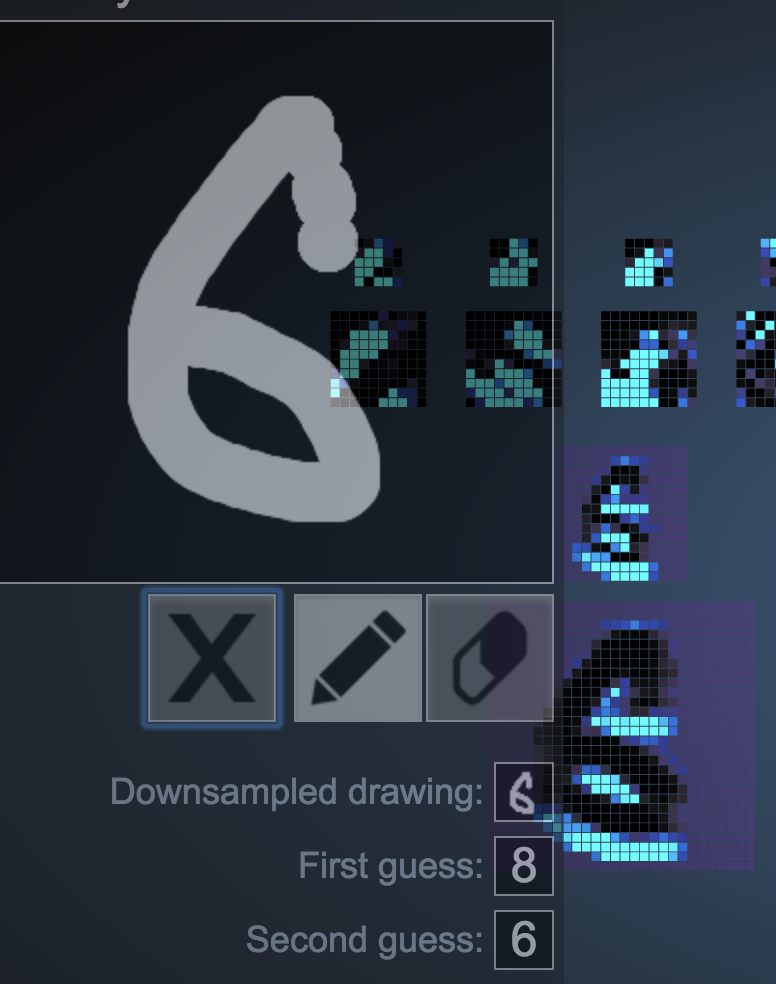
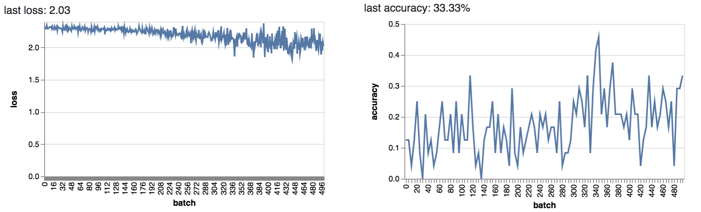
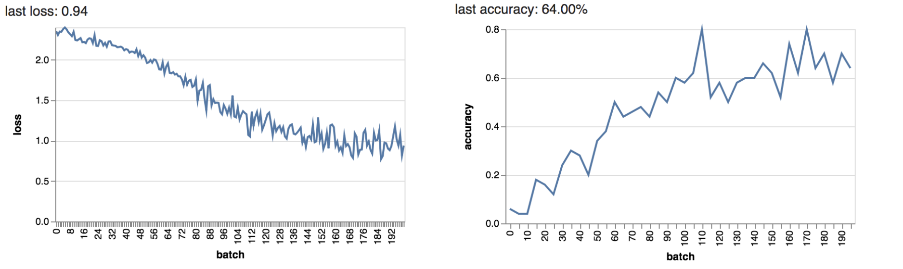

I tried to trick the neural net by slowly changing the input digit. For example, I took a digit such as 6 that was classified correctly. Then I changed the top part of the image to resemble an 8 and it became classified correctly very quickly.
I also tried to see if I could get a very different weird image to be classified as a specific integer. For example, the 7 could be classified just by having two distinct lines in the input image.
1. This is of the Scream (Munch) style. Then I tried to put a styled image through the same filter. However, the image outputted was no different to the input. This seemed to be because the style error had already been minized in the first filter, so not much would change. The same was true of minimize C(E) error.
2. Multiple filters could be used to transcend styles through multiple layers of the Deep Art CNN. The result of applying a second filter is very similar as the final round of style error minimization error results in a similar image.
MY CNN (Fashion MNIST) consisted of a convolution layer with Relu activation -> max pool layer -> flatten layer -> FC connected layer -> softmax. To start, I used default batch values of 50 batches each of size 20. As I increased the batch size, the log loss was around 1.7 and decreased (to 1.2) as well as the accuracy jumping to around 33% with a batch size of 80.
2. Here I changed the filter size parameter, which doubled the default hyperparameter accuracy (to 64%). A size of 6 was optimal in maximising accuracy. In general with hyperparameters, it is good to get a sense of optimality by plotting many different values of hyperparameter against the accuracy or log loss. I also tried increasing the stride from 1, however accuracy dropped as expected due to information loss. These results were very similar between MNIST and Fashion MNIST.
3. CIFAR is harder to train to achieve high accuracies. Not only this, but accuracy jumps around a lot. The eclectic categories of image in the CIFAR set compared to MNIST is probably the reason why it is much harder for the CNNs to classify the images.
4. Adding one more layer increased the accuracy on CIFAR, (of course lengthening runtime). I also added a different size of filtering. A third layer was definitely one too many as accuracy plummeted.
5. I could not get close to 60% in only 2 minutes. I changed the hyperparameters a lot and the best accuracy I got was 47% with a batch size of 10, 2 layers, and a kernel size of 5.
6. Performance statistic: